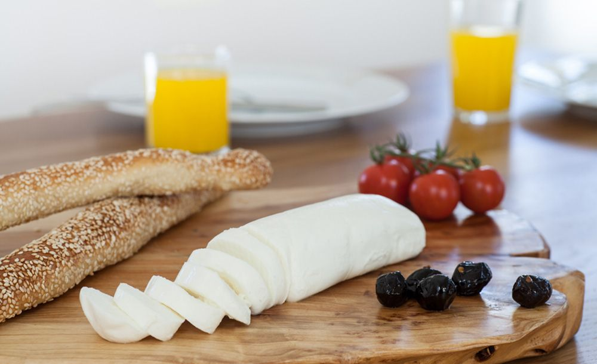

ברוסקטה עם מוצרלה בופאלו וארוגולה
למתכון המלא
מצרכים
- 8 פרוסות לחם מחמצת או צ׳בטה
- ממרח שום (כף שום כתוש מעורבב בשמן זית)
- 2 עגבניות בשלות וקשות, פרוסות דק
- כמה עלי בזיליקום, חתוכים לרצועות דקות
- 3–4 כדורי מוצרלה טרייה
- צרור ארוגולה
- 2 כפות שמן זית
- מלח ופלפל שחור גרוס טרי
אופן ההכנה
- מחממים תנור ל-220 מעלות.
- מורחים את ממרח השום על הלחם. מניחים את העגבניות ומעליהן את המוצרלה והבזיליקום.
- מתבלים במלח ופלפל.
- מערבבים את הארוגולה עם שמן זית ומתבלים.
- עורמים את הארוגולה על הברוסקטה ואופים 8–10 דקות, עד שהארוגולה נובלת והגבינה חמה.